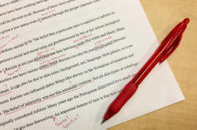

Module Three ELT: the structure, format and style

The mechanics
This is repeated from the guide to writing a Delta Background Essay because it has obvious relevance here. Skip this bit if you have followed that guide.
Referencing
You will need to make sure that the in-text referencing and the
bibliography follow a standard convention.
For details, go to a website for advice. There’s a good guide
to the Harvard referencing system
produced for Anglia Ruskin University that you can access
by clicking here.
Briefly, however:
For in-text references
- Books and articles
- At every point in the text where there is a particular
reference, include the author’s surname and the year of
publication with page numbers if you are quoting specific words
– for example:
In his survey of the social habits of Delta tutors, Bloggs (1998) refuted that ...
or
In his survey of the social habits of Delta tutors, Bloggs (1998: 19) states that, "I can assert without fear of successful contradiction that …"
Make sure that it is 100% clear where your writing stops and a quotation begins, either by using inverted commas or indenting the citation etc. - Website references
- You may not know the author’s name or date (but give them as above
if you do) so this is acceptable:
It has been suggested (Wikipedia (2013)) that …
- For the bibliography
- For ease of access, you may like to divide your bibliography into Books and Articles, Teaching Materials and Electronic resources.
- Books
- List references in alphabetical order by the surname of the
first author. If the author is unknown you should use
“Anon”
For up to three authors include all names; if there are more than three, give the first author’s surname and initials followed by et al.
Provide, in this order and format: Author surname/s and initial/s + ed. or eds. (if editor/s), Year of publication, Title in italics, Edition (if not the first edition) as ordinal number + ed., Place of publication: Publisher
For example:
Jones, D, ed., 1995, My Teaching and Other Fiascos, 5th ed., London: Concourse publications - Articles
- Include also: full journal title, volume number (issue number) and
page numbers, for example,
Bloggs, T, 1997, Developing fluency through ferret keeping, English Language Teaching Journal, 41, 3 pp. 18-83 - Electronic resources
- E-journals – include full URL and date of access, for example:
Bloggs TA, Brown GC, 2012, Spoken English in Weston super Mare, in The Wandering Linguist [online], p. 105. Available from: http://www.wanderling.com/1111 [Accessed 23/08/2004] - Websites
- Supply author/s or corporate body, date of publication /
last update or copyright date, available from: URL [Accessed
date], for example:
eltconcourse.com, How to write a Delta Background Essay, available from: http://www.eltconcourse.com/this page [accessed 02/11/2014]
or:
Bloggs, T, (no date), Ideas for a Creating a Happy Classroom, available from http://eltconcourse.com/training/happiness.pdf [Accessed 03/07/2014]
Avoiding accusations of plagiarism
- You are expected to do wide reading and research on the Delta course so never be afraid to show that you have accessed a range of other people’s work – nobody is expecting you to originate all the ideas and information in your work.
- Read your essays and check whether everything that is not in your own words or from your own resources has been acknowledged.
- Make sure that you include in your bibliography anything you refer to in the text and exclude any reading to which you do not make explicit reference. This includes materials that you put in appendices and use in lessons and plans, by the way.
- Don’t be tempted to think that if you have changed a few words from a source you have read that you don’t need to acknowledge it – you do.
- If in any doubt – reference it.
Latin abbreviations
Using the following is conventional but unimpressive if used wrongly.
- i.e.
- means that is, being the English translation of the Latin id est. It should not be confused with e.g.
- e.g.
- means for example, and is the translation of the Latin exempli gratia.
- cf.
- means compare with or consult, being short for conferre. In Latin it was an invitation to the reader to consult an alternative source to compare with what is being said. In English, it usually simply means compare.
- et al.
- means and others and comes from the Latin et alia oret alii. Use it when there are more than three authors.
- et seq.
- This is the Latin abbreviation for et sequens and
it means and what follows. It is used to direct
the reader to a page or paragraph in a text and note that this
is where the relevant section starts. For example:
See Smith, 1992:350 et seq. - sic
- This is the Latin for so or thus. If
you want to quote something that is incorrect or oddly phrased,
use this in brackets after the words or phrase to show that this
is how it appears in the original text. That way, the
reader will not think it is your mistake. Do not correct
anything that you are citing directly. For example:
The teacher in the home institution informed us that "this class are mixed of reading level (sic)". - viz.
- is the usual abbreviation for videlicet which means namely or that is to say. It should not be confused with i.e.
- q.v.
- stands for quod vide, which means which see and refers to a term that should be looked up elsewhere in a document. It is often used for cross referencing.
- ibid.
- stands for ibidem, in the same place and is used in citations to refer to the immediately preceding citation.
- op. cit.
- stands for opere citato, in the work cited. It is used to refer to any previously cited work, not just the last one.
- pace
- means something like With all due respect to and is used by authors to show respect for the holder of a view with which they disagree (often disrespectfully).
- passim
- means very approximately throughout or frequently and refers to an idea or concept that occurs in many places in a cited work so a particular page reference is inappropriate.
Integrating citation
A section of the advice guide to writing Module Two Background Essays
is concerned with how any citations are a) properly references and b)
integrated into your text.
Click here
to go to it.
 |
Writing the essay |
Style
See the guide to writing
style for Delta for the much bigger picture concerning how to write,
reference and present your essay.
If you would prefer that guide (which is quite long) as a PDF file,
click
here.
This is an academic essay so you need to maintain a certain formality.
- Avoid non-standard abbreviations, contractions and so on.
- Do not use slang or overly colloquial language.
- Use the first person only when you are referring directly to your own experience. If you want to state your opinion, hedge it with something like, It can, however, be argued from my experience that ...
- Use subheadings which actually relate to the following text.
- Use bullet points sparingly and not as a substitute for connected prose. Lists and tables are helpful but you must discuss their content.
The word count
The word limits are absolute: the assignment must be between 4000 and
4500 words long. If your assignment is over the word count by up
to 100 words, it will be marked but you will be penalised.
If the assignment is over 4600 words or under 3900 words, it will be returned to you
unmarked.
Cambridge's advice in the Handbook is as follows:
| ELT Specialism | ELT Management topic |
|
|
You can vary this word count for individual sections, plus or minus 10%, but the total word count must not be more than 4,500 words.
 |
Presenting the essay |
Cambridge have clear guidelines for the mechanics of how the essay should look and you should follow them to the letter. They are:
- File names and formats:
- no more than two documents
- a Word (.doc or .docx) for the main text
- the main text file name must be: centre number_candidate
number_surname_Delta3_specialism abbreviation_month year.
For example:
00111_017_bloggs_Delta3_EAP_0618.docx - a Word or PDF document for the appendices
- the appendix file name must be: centre number_candidate
number_surname_Delta3_appendices_month year. For
example:
00111_017_bloggs_Delta3_appendices_0618.pdf
- 2.5 cm margins all round
- a title page with your identifiers (candidate number and centre number included)
- a contents page
- page numbering throughout
- a footer with your name, candidate number and the title
- no footnotes
Do not include in the appendices any text which should appear in the main essay. This means that a reader should be able to follow your discussion without reference to the appendices at all. Appendices are there to support what you say, not summarise it.
The Cambridge regulations for the appendices are slightly different depending on whether you are submitting an essay on an ELT specialism or on an ELT Management topic:
| ELT Specialism | ELT Management topic |
|
|
 |
Staging the information |
The finished article for Module Three is an Information report.
As such, it has (or should have) certain conventional features which
will occur repeatedly. The essay is long at 4500 words so each
section will follow a conventional structure embedded in the whole.
In other words, the overall structure is an information report and the
sections within it are sub-reports following the same staging and
structure. That is what the reader expects.
Information report structure
The report will have three sections and so will each mini-report embedded within it. These sections are
- A general statement identifying the topic (either overall or of each sub-section)
- For the report as a whole, this will probably be quite a long
section which introduces the topic, makes it clear to the reader
what the focus is and how it will be addressed.
For each sub-section of the report, you will also need this stage to make it clear to the reader what will follow. For example
Pre-testing
Given the nature of the learners and their rather precise aims, it was necessary to construct a pre-test which would identify the learners' current abilities in the four areas of competence the course is designed to address. - or
Needs analysis
For this group, needs analysis was conducted in two ways: a) through a meeting with the group's sponsor and a representative of the group and b) via a questionnaire completed independently by each group member.
or, for an ELT Management assignment:
Situation analysis
Because the focus of this innovation concerned better meeting the needs of our learners in in-company teaching programmes, the analysis was focused in two ways: a) on the perceptions of the participants, gathering data via questionnaires and focus-groups and b) by conducting lengthy meetings with the management and human resource departments of the companies with whom the institution has long-standing and amicable relationships.
These examples identify the focus of the sub-section and give the reader some inkling of what is to follow, i.e. a description and discussion of the testing formats, items and procedures with comment on each or the same for the needs analysis. - Description
- Here you insert the body of what you are writing about, describing and evaluating as you go along.
- Conclusion
- Here you identify the most salient parts of the report and comment overall on achievement (or otherwise).
Discussion structure
Within each section, you will probably need to insert some discussion of procedures, plans, tests, needs or situation analyses and so on. These sections (or sub-sub-sections) take a slightly different form:
- A general statement identifying the issue
- For example,
Relying on only a two-fold needs analysis procedure was the only practical way forward, given the time constraints.
or
Given the constraint that the management of the companies with whom we work have limited time available to devote to investigating the needs of their employees for language skills, it was thought that best way to gather the data we need to align our courses more closely to our clients' needs was to ...
These examples identify the focus of the sub-section and gives the reader some inkling of what is to follow, i.e. a discussion of the merits and demerits of the procedure. - Arguments for
- Here you set out the merits and the success of the procedure. There should be a number of points made here.
- Arguments against
- Here you set out the drawbacks.
- Conclusion
- Here you reach a balanced and fair conclusion regarding the efficacy of what you did.
An alternative but equally valid structure is to mix arguments for and against in a series rather than confining them to lists of one or the other so the format goes: For > Against > For > Against > For > Against > etc. rather than For > For > For followed by Against > Against > Against etc.
On mixing things up
A sure-fire way to confuse your reader and lose coherence is to mix
in to discussions things which belong in the information reports and
vice versa.
For example, if you are discussing the efficacy of the tests,
questionnaires, meetings, focus groups or other data-gathering
techniques, that is the place to comment on how successful they were
in terms of validity, comprehensiveness and accuracy etc. It is not the place to describe the
procedures. On the other hand, if you are describing the reasons behind
the selection of analysis formats, this is not the place to
discuss their (dis)advantages. That belongs in the discussion
which follows or precedes the description.
Writing a conclusion |
For reasons known to Cambridge your Module Three essay is
required to have a conclusion.
For the ELT specialism, you have around 400 words to spend on this
but for the ELT Management topic, only 200.
Whichever kind of essay you have produced for this module,
your conclusion should not be a simple repetition.
Here, you need to summarise and address the key issues of your
essay.
Here is some advice and questions to answer for both types of essay:
- Refer to your introduction here and to the principles you set out to follow. How have you applied these principles?
- What benefits do you perceive the proposal / course will have?
Do not simply list them, relate them to parts of your proposal. - What are the limitations of your proposal?
Consider drawbacks and constraints.
|  |
Marking |
More detail is available from the Cambridge website which contains a detailed look at the Management option rather than the other topics (it's available at http://www.cambridgeenglish.org/teaching-english/teaching-qualifications/delta/how-to-prepare-for-delta/).
The handbook for all Delta Modules is available from http://www.cambridgeenglish.org/images/181161-delta-handbook-for-tutors-and-candidates-document.pdf
Your report is marked as follows:
| ELT Specialism | ELT Management topic |
|
|
It looks like this:
 |
 |
You can see that the marks are spread pretty evenly so you have to give each section equal attention and probably equal space.
Module Three is marked externally out of a maximum possible mark of
140. The marks you need to get are, approximately:
Pass: 80 | Pass with Merit: 100 | Pass with Distinction: 120
Summary
Here's a summary of the report structure. You may like to print
it out and keep it to hand while you write.

| The Delta index |